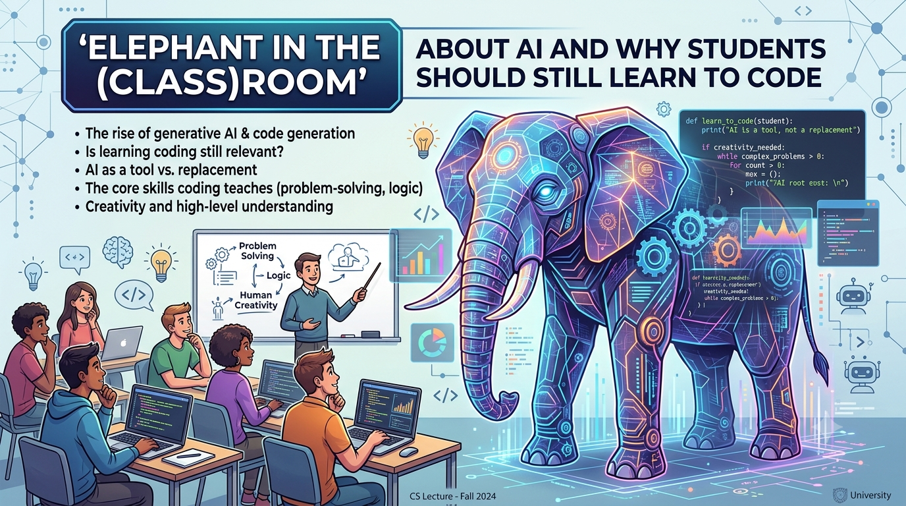
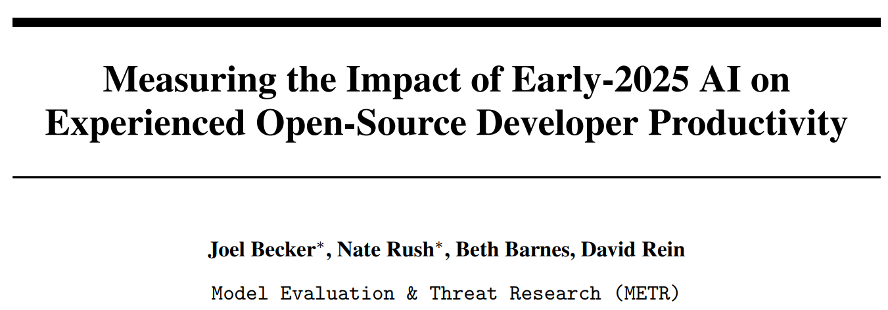
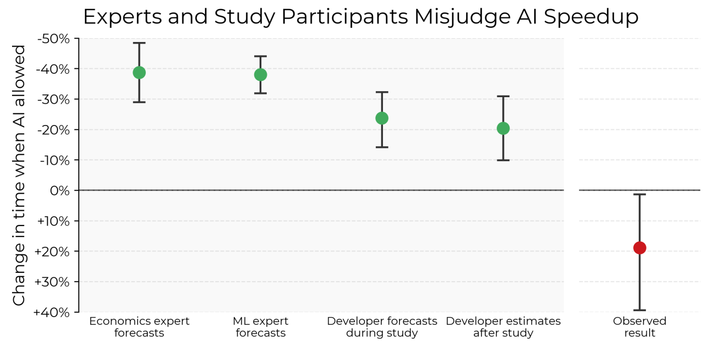
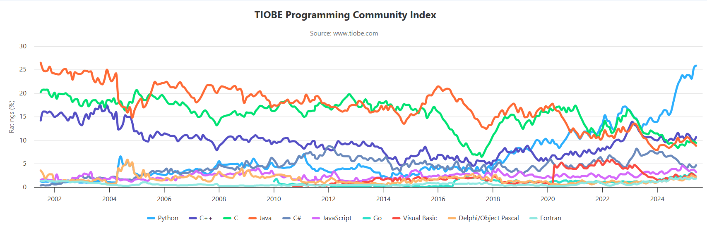
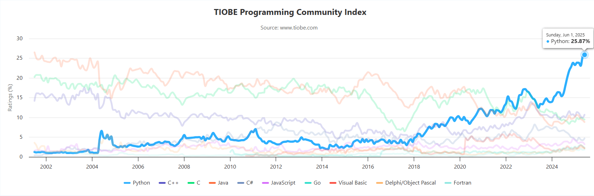

1 What is econometrics?
2 Basic mathematical tools
3 Stats fundamentals
4 Stats fundamentals II
5 Simple regression
6 OLS properties & fit
7 Flavors of OLS & OVB Quiz
8 Causality
9 Regression inference
10 Inference, continued PS due 16 Oct
11 Diagnostics
12 Measurement error & IRL
13 Revision
The elephant
in the
(class)room
Image generated using Adobe Express (Premium)
Prompt: elephant in the classroom

Quick survey on your background & interests
Portal answers are anonymous & ungraded
Coding builds core transferable skills
Coding builds core transferable skills
Coding makes you stand out
AI can't replace understanding
Coding builds core transferable skills
Coding makes you stand out
AI can't replace understanding


Source: Becker et al. (2025)
We'll use Python & Jupyter notebooks for our econometric data work
Python is...
one of the most popular programming languages


We'll use Python & Jupyter notebooks for our econometric data work
Python is...
a free & open-source general-purpose programming language
used for
We'll use Python & Jupyter notebooks for our econometric data work
Python is...
a free & open-source general-purpose programming language
used by
We'll use Python & Jupyter notebooks for our econometric data work
Jupyter notebooks: one of the many ways of interacting with Python
They let you use your browser to
We'll use Python & Jupyter notebooks for our econometric data work
Jupyter notebooks: one of the many ways of interacting with Python
Jupyter isn't the only way to code in Python, but it's GREAT for
Everything in this unit runs in Google Colab,
in your browser
Colab allows you to run Python (in a Jupyter notebook)
on a Google-provided remote cloud computer
Amazingly, this is free but it does require a Google account
One cool feature of this is that you can run it from your smartphone
Open this week's lecture notebook and follow along:
It will open directly in Colab
Click Copy to Drive first, so your edits save
I hope you're excited about applying these skills
and building on them!